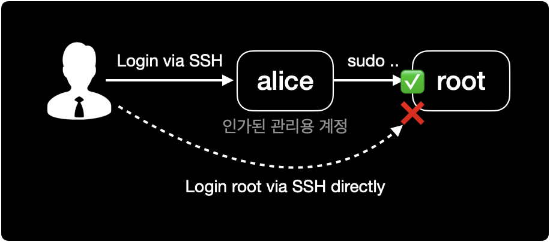

HP-UX root 직접 로그인 금지
개요
HP-UX 운영체제에서 SSH root 로그인 금지 설정을 할 수 있습니다.
배경지식
서버 계정 관리의 모범사례
root 계정 관리의 모범사례를 몇 가지 알려드립니다.

모든 시스템 보안은 최소 권한의 원칙POLP, Principle Of Least Privilege을 지키는 것부터 시작입니다.
root계정은 직접 서버 콘솔에서 로그인 방식인 Console과 원격 로그인 방식인 SSH 모두 직접 로그인할 수 없도록 막아둡니다.- 서버 관리자는
root계정 대신 별도 관리용 유저 계정을 생성해서 사용합니다. - 서버 관리 및 트러블슈팅 상황에서 root 권한이 요구되는 경우
sudo로 일회성 권한을 얻어 명령어를 실행하거나,su로 root 계정에 전환해서 사용합니다. sudo와su를 실행할 수 있는 권한을 가진 유저 계정의 범위도 최소한으로 제한해야 합니다.
환경
- OS : HP-UX B.11.31
- Shell : sh (POSIX Shell)
설정방법
1. sshd 설정파일 변경
SSH 설정파일의 기본 경로는 /opt/ssh/etc/sshd_config 입니다.
vi 에디터를 사용해서 설정파일을 수정합니다.
$ vi /opt/ssh/etc/sshd_config
...
PermitRootLogin yes
PermitRootLogin yes를 no로 변경합니다.
PermitRootLogin의 기본값은 yes입니다.
$ vi /opt/ssh/etc/sshd_config
...
PermitRootLogin no
2. SSH 서비스 재시작
변경된 SSH 설정을 적용하기 위해서 SSH 서비스인 secsh를 재시작합니다.
SSH 서비스를 중지하더라도 이미 로그인 중인 원격 세션은 끊기지 않습니다.
SSH 서비스 중지
SSH 서비스 secsh를 중지합니다.
$ /sbin/init.d/secsh stop
HP-UX Secure Shell stopped
SSH 서비스 시작
중지한 SSH 서비스 secsh를 다시 시작합니다.
$ /sbin/init.d/secsh start
HP-UX Secure Shell started
HP-UX는 Linux와 다르게 SSH 서비스를 restart sub command로 한 번에 재시작할 수 없습니다.
반드시 stop한 다음 start 하는 방식으로 서비스를 재시작하기 때문에 번거롭습니다.
3. SSH 서비스 확인
ssh 데몬 sshd가 동작중인지 확인합니다.
$ ps -ef | grep ssh
참고자료
How to Disable Root SSH Login in HP-UX?
root 계정의 SSH 로그인 금지 설정
HP-UX start or stop / restart OpenSSH SSHD service
SSH 데몬 중지 및 시작 방법